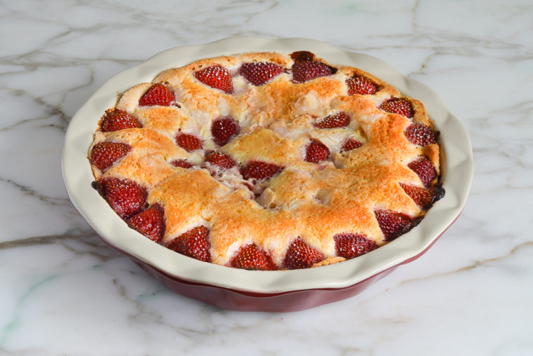

Strawberry Cake

Description>
This cake recipe is taken from Once Upon A Chef, with several notes by me at the bottom after making.
It's quick, delicious, and easy! You most likely have everything needed in your pantry already, all you need are some fresh strawberries!
Ingredients
- 1 & 1/2 cups AP flour
- 1 & 1/2 tsp baking powder
- 1/2 tsp salt
- 6 tbsp unsalted butter, softened
- 1 cup plus 2 tbsp sugar, divided
- 1 large egg
- 1 tsp vanilla extract
- 1/2 cup milk
- About 3/4 lbs fresh strawberries, hulle and halved
Directions
- Preheat the oven to 350°F and butter a 9-inch deep dish pie pan or 9-inch square cake pan.
- In a medium bowl, whisk together the flour, baking powder and salt. Set aside.
- In the bowl of an electric mixer, beat the butter and 1 cup of the sugar until pale and fluffy, about 3 minutes. Add the egg and vanilla and beat on low speed until well combined. Gradually add the flour mixture, alternating with the milk, and beat on low speed until smooth. (Note: the batter will be thick.)
- Transfer the batter to the prepared pan and smooth with a spatula (if you use a square cake pan, the batter will only come about 3/4-inch up the sides of the pan -- that's ok). Arrange the strawberries on top, cut side down, so that they completely cover the batter (the recipe calls for approximately 3/4 pound of strawberries; use more or less if necessary). Sprinkle the remaining 2 tablespoons of sugar over the strawberries.
- Bake for ten minutes, then reduce the heat to 325°F and bake until the cake is lightly golden and a tester comes out clean, about an hour. Let the cake cool in the pan on a rack. Serve with sweetened whipped cream or vanilla ice cream, if desired.
- Cake can be stored at room temperature for several days, loosely covered.